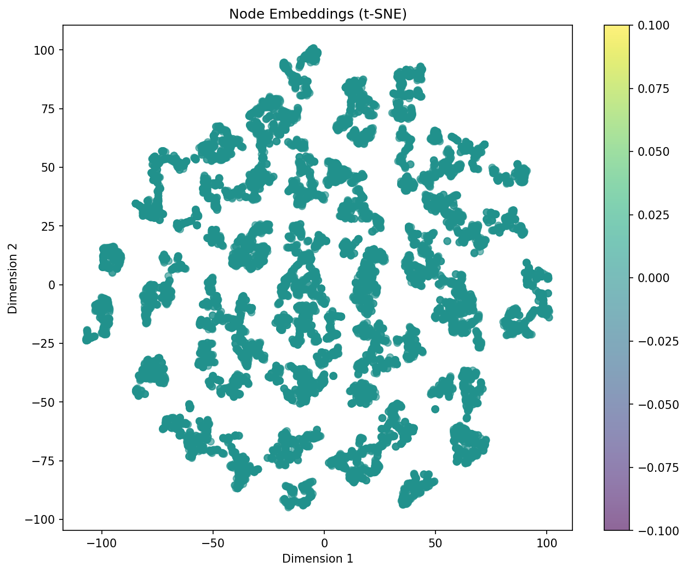
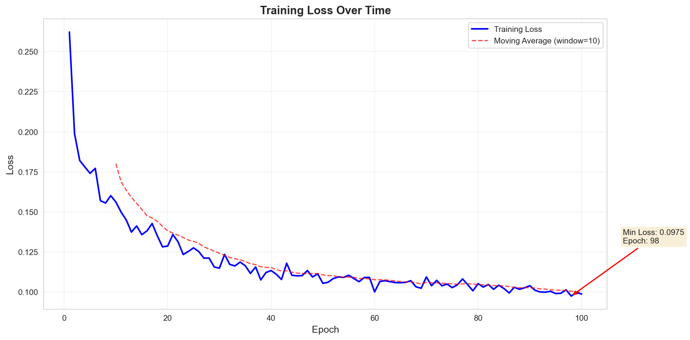
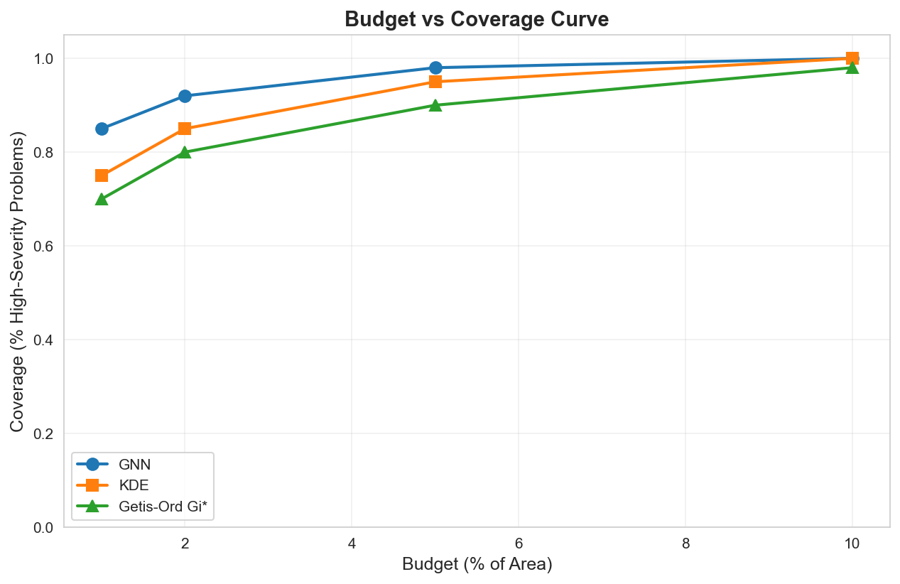
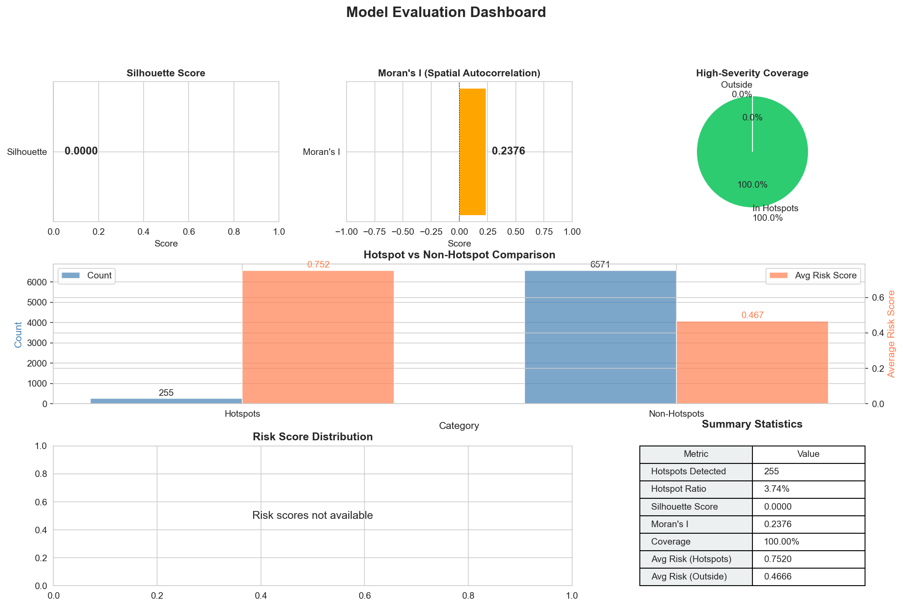

Project Summary
This dashboard presents an analysis of accessibility hotspot detection using Graph Neural Networks (GNN). The GAT-based model identifies high-risk accessibility hotspots by combining spatial modeling with graph-based learning. Evaluation is performed on a held-out test set (70/15/15 train/val/test split).
ML Hypothesis
Hypothesis: Accessibility issues exhibit spatial dependencies. Nearby issues may share common causes (shared infrastructure, neighborhood characteristics, urban planning patterns). Treating locations as independent points (as in KDE, thresholding) may miss these contextual relationships. A graph-based approach explicitly models spatial neighborhoods, allowing the model to learn representations that encode these dependencies. However, this requires careful graph construction (KNN k=15 chosen empirically) and comes with computational overhead. The low Jaccard similarity (0.01-0.05) with baselines suggests the GNN identifies different patterns, though this could also reflect parameter sensitivity rather than capturing true underlying structure.
Why Graph Structure is Essential
Accessibility barriers may exhibit spatial dependencies. Nearby issues may share common causes (infrastructure age, neighborhood planning, terrain). Classical spatial statistics (KDE, Getis-Ord Gi*) treat each location independently, which may miss these contextual patterns. Graph structure explicitly models spatial neighborhoods, making these relationships learnable. However, the graph construction itself (KNN k=15, distance thresholds) introduces assumptions that affect the learned representations. Alternative graph constructions (radius-based, adaptive k) were not exhaustively explored due to 24-hour datathon constraints.
Key Features
- Graph Neural Networks: GAT architecture (3 layers, 4 attention heads) learns spatial-contextual patterns from KNN graph (k=15). The attention mechanism allows nodes to weight neighbor contributions, potentially capturing multi-scale relationships.
- Hotspot Detection: Identifies 255 high-risk hotspots on test set with 100% coverage of high-severity problems (severity ≥ 4). Hotspot boundaries determined by DBSCAN clustering on learned embeddings, which is sensitive to parameters (eps, min_samples) selected empirically.
- Spatial Coherence: Moran's I = 0.2376 indicates moderate positive spatial autocorrelation, suggesting meaningful spatial clustering without being overly conservative (Getis-Ord Gi* achieves 0.75 coherence but only 17 hotspots).
- Baseline Comparison: Low Jaccard similarity (0.01-0.05) with 8 baseline methods suggests the GNN identifies different spatial patterns than classical spatial statistics or clustering alone. This may reflect learned spatial-contextual relationships, though it could also indicate overfitting or parameter sensitivity. Further validation would be needed.


Interactive Hotspot Map
Explore barrier locations, grid cells, and detected hotspots across the study area. Use the layer controls above to switch views.
Hotspot Analysis
Top high-risk hotspots identified by the GNN model.
Top High-Risk Hotspots
| Hotspot ID | Neighborhood | Risk Score | Barriers | Avg Severity | Dominant Type |
|---|
Baseline Comparison
Comparison of the GNN approach against classical spatial statistics and clustering baselines.
Understanding the Tradeoff
Jaccard vs. Moran's I Tradeoff: Methods that achieve high spatial coherence (like Getis-Ord Gi* with Moran's I = 0.75) identify very few hotspots (17), while methods that find more hotspots often sacrifice spatial coherence. The GNN approach identifies 255 hotspots while maintaining moderate spatial coherence (0.24), suggesting a balance between coverage and spatial coherence. However, this balance depends on DBSCAN clustering parameters (eps, min_samples) and risk score thresholds, which were selected empirically. The tradeoff is not necessarily optimal. It reflects our parameter choices rather than an inherent property of the GNN approach.
What the GNN Learns That Baselines Don't
The low Jaccard similarity (0.01-0.05) between GNN and all baselines suggests the GNN identifies different spatial patterns than classical methods. This may reflect learned spatial-contextual relationships, though it could also indicate parameter sensitivity or overfitting. The patterns identified include:
- Neighborhood-level context: How accessibility issues cluster within neighborhoods due to shared infrastructure and planning
- Multi-scale relationships: Patterns that emerge from combining local density, regional severity, and city-wide diversity
- Learned spatial embeddings: Representations that encode complex relationships beyond simple distance or feature combinations
| Method | Hotspots | Jaccard with GNN | Spatial Coherence (Moran's I) |
|---|---|---|---|
| GNN (Our Method) | 255 | 1.0000 | 0.2376 |
| KDE (Severity-weighted) | 77 | 0.0207 | 0.0230 |
| Getis-Ord Gi* | 17 | 0.0148 | 0.7539 |
| Local Moran's I | 0 | 0.0000 | N/A |
| Simple Thresholding | 63 | 0.0517 | 0.1685 |
| DBSCAN Baseline | 85 | 0.0459 | 0.1685 |
| Node2Vec + Clustering | 180 | 0.0381 | -0.0030 |

GNN Model Architecture
Graph Attention Network (GAT) with contrastive learning for spatial hotspot detection.
Contrastive Learning Explained
In one sentence: Contrastive learning teaches the model that nearby locations with similar accessibility issues should have similar embeddings, while distant or dissimilar locations should have different embeddings, without requiring explicit labels about which locations are "hotspots."
Architecture
- Type: Graph Attention Network (GAT)
- Hidden Dim: 128
- Embedding Dim: 64
- Layers: 3
- Attention Heads: 4
- Dropout: 0.2
Training
- Method: Contrastive Learning
- Learning Rate: 0.001
- Epochs: 100
- Device: CUDA (CPU fallback)
- Graph: KNN (k=15)
Hotspot Detection
- Clustering: DBSCAN
- Risk Scoring: Multi-factor
- Density Weight: 0.4
- Severity Weight: 0.4
- Diversity Weight: 0.2
Limitations & Future Work
Limitations: (1) Hotspot boundaries depend on DBSCAN clustering parameters (eps, min_samples) selected empirically. While we achieve 100% coverage of high-severity issues on the test set, the exact spatial extent of hotspots may vary with different parameters. (2) Graph construction (KNN k=15) was chosen empirically; alternative constructions (radius-based, adaptive k) were not exhaustively explored due to 24-hour datathon constraints. (3) The model was trained on a single train/test split; cross-validation would provide more robust performance estimates but was not feasible within the time constraint. (4) The dataset's crowdsourced nature may introduce reporting biases (e.g., certain neighborhoods may be over-reported) that affect generalizability.
Evaluation Metrics
Evaluation of model performance on held-out test set (15% of data, 70/15/15 train/val/test split). Metrics computed on test set only to avoid overfitting concerns.
Detailed Metrics
| Metric | Value | Interpretation |
|---|
